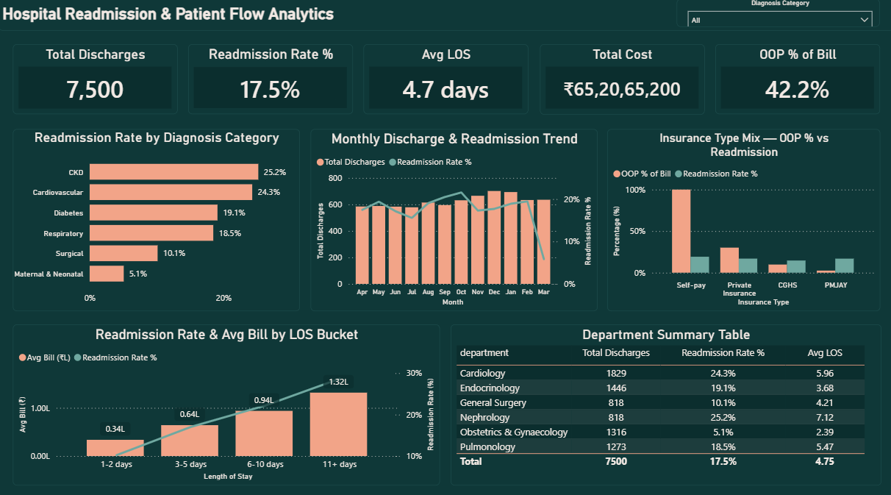
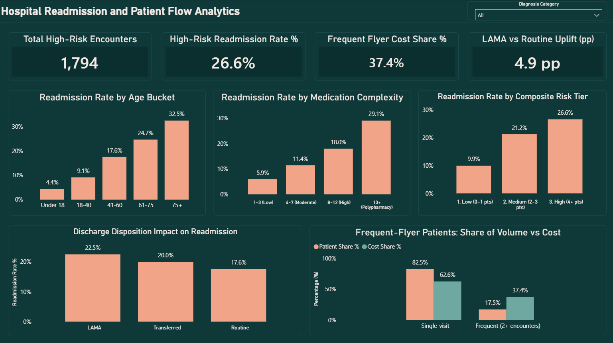

Actionable findings
What the data revealed
01
Age is the cleanest single driver in the entire analysis — readmission climbs monotonically from 4.4% (Under 18) to 32.5% (75+), a near-linear progression with zero reversals. Discharge planning resources should scale directly with age past 60, not just flag a single elderly threshold.
02
CKD and Cardiovascular patients readmit at ~5x the rate of Maternal/Neonatal (25.2% and 24.3% vs 5.1%), and length of stay compounds this — readmission triples and average cost quadruples (₹33.7K → ₹1.32L) from the shortest to longest stay bracket. A dedicated post-discharge protocol for these two categories with extended stays targets the highest-cost, highest-risk overlap directly.
03
Self-pay patients are the real equity story — not PMJAY. Self-pay bears 100% out-of-pocket cost and shows the highest readmission rate (19.2%). PMJAY's expected access-friction effect turned out real in direction but too modest to separate from Private Insurance (16.90% vs 16.95%) — an honest finding, not the dramatic PMJAY story initially expected.
04
LAMA discharge is the one directly fixable process failure (22.5% vs 17.6% Routine, a +4.9pp uplift). Unlike age or diagnosis category, this is a process outcome a hospital can actually intervene on — a structured 48-hour follow-up call for LAMA patients is a concrete, low-cost intervention with a defensible expected return.
05
17.5% of patients (2+ encounters/year) drive 37.4% of total inpatient cost — more than double their proportional share. A care-management programme targeting this specific frequent-flyer segment would have outsized cost-reduction leverage relative to a hospital-wide initiative.
Dashboard preview
2-page Power BI dashboard


Click main image to enlarge · 2 pages
Technical highlights
How it was built
Synthetic dataset generated in Python and calibrated against real published Indian benchmarks (ICMR disease-burden ordering, a PMJAY-era OOPE cost study) — readmission driven by an actual logistic risk model, not a random flag
Prior-admission counts computed via a SQL self-join, independently cross-validated in Python using a structurally different time-window technique — exact match across all 9,093 encounters (7,500 / 1,311 / 282 by prior-admission count)
Composite 5-factor risk-tier score (age, comorbidity, prior admissions, insurance type, LAMA) built via chained CTEs in SQL, then re-derived directly as a DAX calculated column reusing the already-validated Python features
Python confounding check: a 0.727 correlation between medication complexity and comorbidity count proved the two are confounded, not independent — turning a SQL-stage suspicion into a defensible, numeric fact
Fiscal-year sort/label column pairs (April = 1 … March = 12) across all bucketed charts, so trend and bucket visuals read in true chronological and logical order instead of alphabetical
6 real bugs caught and documented across all three layers — from a risk-model centring error that overshot every readmission target, to a KPI card silently bound to the wrong measure (showing 17.9% instead of the correct 26.6%)
A note on the March dip: the monthly trend chart shows readmission dropping to ~5.8% in March against a steady 17–21% every other month. This was verified against the raw data, not assumed — it's a genuine artifact of the dataset's hard one-year cutoff (patients discharged very late in March simply run out of calendar days to be captured as a readmission within the observation window), documented directly on the chart so it can't be misread as a real quality improvement.